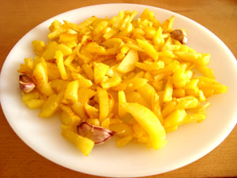

Ingredientes.
3 ó 4 patatas (300g.)
4 dientes de ajo.
Aceite de oliva.
Sal
Elaboración (Pasos)
Calentar aceite en la sartén.
Añadir las patatas cortadas, la sal y los ajos.
Freír al gusto.
Servir en el plato.